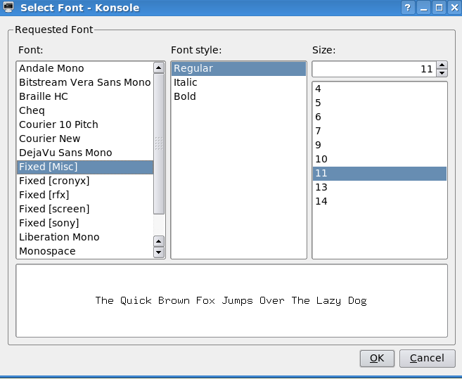

Данная проблема актуальна для Debian, который до сих пор использует KDE версии 3.5 и в котором эмулятор терминала konsole по умолчанию не использует Fixed фонты. Меня данное обстоятельство сильно угнетало так так текст с которым я работаю в редакторе vim выглядит прилично только с этим фонтом. Проблема усугубляется тем, что сие обстоятельство весьма плохо гуглится и для того чтобы найти решение мне пришлось искать информацию и пробовать разные настройки довольно долго. Надеюсь вам это сэкономит время.
Итак, первым делом надо подправить файл /etc/fonts/conf.avail/99-konsole.conf, чтобы он выглядел так:
<?xml version="1.0"?>
<!DOCTYPE fontconfig SYSTEM "fonts.dtd">
<fontconfig>
<dir>/usr/share/apps/konsole/fonts</dir>
<selectfont>
<acceptfont>
<pattern>
<patelt name="family" >
<string>Fixed</string>
</patelt>
</pattern>
</acceptfont>
</selectfont>
</fontconfig>
Затем следует проинсталлировать Fixed фонты и добавить путь в xorg.conf, (кроме дефолтных — например ~/.fonts).
Признаюсь я не нашел ничего подходящего из Debian-овских пакетов, поэтому просто слил "media-fonts/font-misc-misc" и "media-fonts/font-sony-misc" из репозитария Генту, распаковал и положил в папку ~/.fonts. Не забываем создать файл fonts.dir командой mkfontdir.
Теперь остается только обновить кеш фонтов:
fc-cache -f -v
и все, можно выбрать в настройках konsole Fixed фонты разных сортов и размеров, подобрав оптимальный.

Можно обойтись и без дополнительных *-misc-* пакетов, ограничившись правкой файла /etc/fonts/conf.avail/99-konsole.conf, но тогда возможно, безальтернативный вариант окажется неудачным.